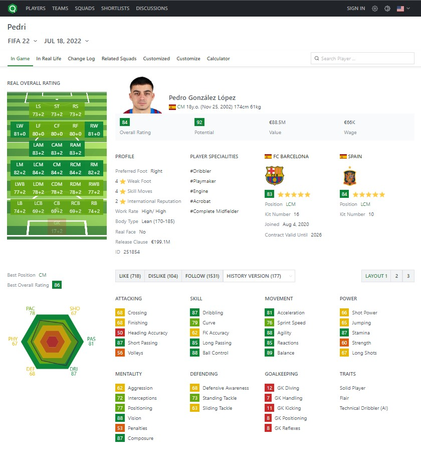
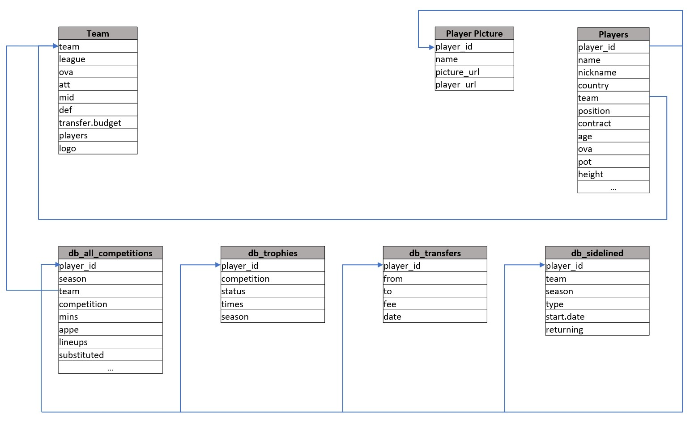

Sofifa
Web Scraper
Are you a football (soccer) fan?
Would you like to have data for your advanced analysis?
Data Source
www.sofifa.com
As you may know, sofifa is a web that contains the different tables that conform the EA FIFA video game database, in its different editions. Some of the tables contained on the website are:
- Players attributes: more than 50 different properties of each player from the game.
- Player Domestic League: domestic league historical stats from the player.
- Player Domestic Cups: domestic cups historical stats from the player.
- Player International Cups: international cups historical stats from the player.
- Player National Team: national team historical stats from the player.
- Player Trophies: trophies won by the player.
- Player Transfers: player transfer history..
- Teams: all the information of the national and league teams from the game.
Web Scraping
To scrape the data, I divided the process into 4 steps, using Rvest library:
Player Table
First of all I scraped the players attributes table. This table has 76 different numeric and non numeric features such as:
- Height (numeric)
- Weight (numeric)
- Shooting power (numeric)
- Team (non numeric)
- Position (non numeric)
- Contract (non numeric)
Player Image
Assuming that later we will use the data to create a report or a dashboard we need also to scrappe the url that contains each players png image and storing it in a table linked to a player_id.
When obtaining this url we may as well create the url that on "Player Stats" will leads to every player's real life stats for every season.

Teams
Not only players may be relevant for analysis, also teams may be important when creating sport insight or when gathering information for a sport analytics project. To scrape teams I used a script similar to players table, which navigates to a specific link, searches for the containing table and starts extracting all the lines in the table into a data frame. The extracted information is: "Team", "League", "OVA", "ATT", "MID", "DEF", "Transfer.Budget", "Players" and "Logo".
Player Stats
The last step is to extract all "real life" historical data. I used the url that we previously created in the second step. You may realize that in one page we have up to 7 different tables. This may represent a "difficulty" because each table is named equally and not all players provide the 7 tables. Nevertheless once we find the way to identify specifically each table we may extract a lot of information with a single script.
Data Base Structure
